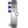

Move_phiForced movement of a flange according to an angle signal |
|
Information
This information is part of the Modelica Standard Library maintained by the Modelica Association.
Flange flange is forced to move relative to flange support with a predefined motion according to the input signal u
u[1]: angle of flange u[2]: angular velocity of flange
The user has to guarantee that the input signals are consistent to each other, i.e., that u[2] is the derivative of u[1].
The input signals can be provided from one of the signal generator blocks of the block library Modelica.Blocks.Sources.
Parameters (1)
| useSupport |
Value: false Type: Boolean Description: = true, if support flange enabled, otherwise implicitly grounded |
|---|
Connectors (3)
Used in Components (1)
|  |
Modelica.Mechanics.Rotational.Components Signal adaptor for a Rotational flange with torque as output and angle, speed, and optionally acceleration as inputs (especially useful for FMUs) |